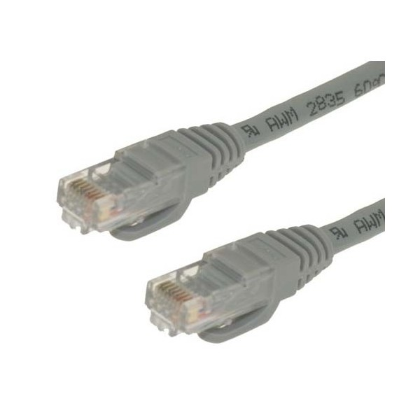

In This section we will cover various tutorials about hardware and software
Hardware
How to build a PC
This video playlist shows how to build a PC.
Video Source: Richard, Gary & Dan's Unit 2 PC Build
How to setup a router
Have you got yourself a new router? are there barely any instructions on how to set it up so you can get your network working at home?
While there are many, many different routers they all operate in a fairly similar manner, this tutorial will give you a detailed description along with a video that will show you which cables connect to where and how to get started on setting up your home network, while certain aspect of the installation process will be vary depending on your model, such as inputting passwords and how many lines can be connected the process will remain the same.
Please see the following video which will explain in detail how to connect a router.
Video Source: ExpertVillage YouTube Channel
How to install RAM
do you want your computer to run a bit more smoothly? can you only run one program at a time without your computer deciding to run in slow motion?
By upgrading the ram in your computer you will be able to increase the speed and productivity of your machine, to do this you will need to open up the desktop unit or the base of your device if you need help in gaining access to the interior of your machine search for the model number, there always videos detailing the correct way to open up desktop units and laptops.
Please see the following video which will explain in detail how to install ram.
Video Source: Jetskier1616 YouTube Channel
Software
How to install and set up your antivirus
Your computer needs to be protected online and so you will need to install an antivirus application onto your computer this will make using the internet much safer. this tutorial is designed to show you how to install antivirus software, to make this simple we have chosen the AVG free antivirus software.
Please follow the instructions on the video.
Video Source: Official AVG YoutTube Channel
How to change personal desktop settings
Whether you want to change the appearance of your desktop, or make any changes to other desktop settings you will need to know how to access the window you need and know what the options you will be faced with are. please follow the video below for help with desktop settings.
Video Source: PCDesktops YouTube Channel
Frequently Asked Questions (FAQs)
Here are some Frequently Asked Questions (FAQs) that we get asked
Q1: My computer won't turn on, what could be wrong?
 There could be many reasons why your computer won't turn on. The most common of which is that the the computer and/or the monitor aren't plugged in or turned on. First look at the back of the computer, you will see something like this, similar to the image on the right.
There could be many reasons why your computer won't turn on. The most common of which is that the the computer and/or the monitor aren't plugged in or turned on. First look at the back of the computer, you will see something like this, similar to the image on the right.
As you can see there is a power cable connector and a power switch. to ensure that this is not the problem; plug in the power cable and make sure that the power switch is turned on (line furthest away from you is in the on position.) Then you must make sure it it turned on at the wall/plug.
Now you need to make sure the monitor is also plugged in at the plug/wall. Once you have plugged it in and turned it on, you must now locate the VGA cable. The VGA cable generally is blue, and has two screws that keep the cable in place.
You must make sure that one end is plugged into and screwed in on the monitor and the bottom most socket on the back of the computer. Once you have done this, turn the monitor and the computer on. This should turn the computer on, and should be displayed on the monitor.
Q2: I can't log onto the network. what is wrong?
 If you can't log on there may be one of two things wrong.
Solution 1:
The computer's ethernet cable is not plugged into either the computer or the wall.An ethernet cable looks like this:
To fix this problem you need to locate the ethernet cable and to find out which ends lead where. If the cable leads to the wall and the computer then go to solution 2. If the ethernet is not plugged into either then you will need to find where it plugs into in the wall and the computer, then plug it in. Now, try to log onto the network again. If you still can't log onto the network then go to solution 2.
Solution 2:
If you find that both of the ends are connected to your computer and the wall then go to our 'contact us' or 'Services' page for information on how we can help you.
Q3: Why does my computer get a blue screen and restart
There is many reasons why the computer may get a blue screen and restart. And there is 2 different procedures that you can take:
Procedure 1:
Restart the computer. If you find the computer is still blue screening go to procedure 2.
Procedure 2:
Use our form on the Services page to get a personal responce from the staff of DuckIT.
Q4: Is there any way I can contact you if you are closed or not there?
Yes, if you go to our 'Services' page there will be a form there for you to fill out and we will receive the email and will respond as soon as possible.
Q5: How do I log off if someone has locked the computer?
If you find you are going to use a locked computer that is not locked by you, you will have to go through some steps before you log them off. Firstly if the person is in the room you will have to consult them if you want to use the computer. If they are not in the room, seek out a lecturer to find out what to do with the locked computer. If everything is OK then in order to log them off you will have to hold the power button until the computer turns off. We are not responsible for any loss of work due to you turning off a computer whilst someone is logged on.
Other Questions?
Can't find what you are looking for? Answers wrong or didn't work? Got to our 'Contact Us' page to ask any additional questions, or to enquire about one of our ready-existing FAQs.